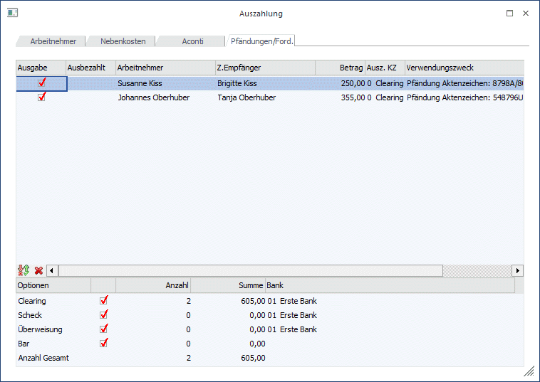
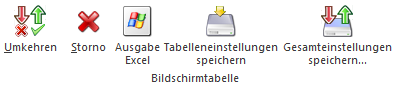

Im Register Pfändungen/Ford. können bei der Abrechnung berücksichtigte Pfändungsbeträge oder sonstige Forderungen (Akonti) ausgezahlt werden. Damit hier Datensätze vorgeschlagen werden, müssen entsprechende Pfändungsbeschlüsse mit den entsprechenden Zahlungsinformationen beim AN-Stamm hinterlegt worden sein.
Vorgangsweise für die Auszahlung:
Nach Aufruf des Menüpunkts wird in das Register Pfändungen/Ford. gewechselt.

In der Tabelle sind folgende Informationen enthalten, wobei der Inhalt der Tabelle nach den Spalten AN-Nr., Nachname und Vorname sortiert werden kann:
Ø Ausgabe
Durch Aktivieren der Checkbox wird entschieden, ob eine Auszahlung vorgenommen werden soll oder nicht.
Ø Ausbezahlt
In diesem Feld wird das Datum der letzten Auszahlung angezeigt. Ist dieses Feld gefüllt, wird die Checkbox "Ausgabe" automatisch deaktiviert.
Ø Arbeitnehmer
Es wird angezeigt, um welchen AN es sich bei der Zahlung handelt.
Ø Z.Empfänger
Hier wird der Zahlungsempfänger, der beim Pfändungsbeschluss hinterlegt ist, angezeigt.
Ø Betrag
In dieser Spalte wird der Auszahlungsbetrag ausgewiesen.
Ø Ausz. KZ
In diesem Feld wird das Auszahlungs-Kennzeichen, das im Empfänger-Stamm hinterlegt werden kann, vorgeschlagen. Das Kennzeichen kann aber in der Tabelle noch übersteuert werden.
Ø Verwendungszweck
In dieser Spalte wird der Verwendungszweck angezeigt, der bei der Überweisung verwendet wird. Der Verwendungszweck wird aus dem Pfändungs-Aktenkennzeichen gebildet.
Tabellenbuttons:

Ø Umkehren
Durch Anklicken des Umkehr-Buttons kann die Selektion in das Gegenteil gekehrt werden. Beispiel: Standardmäßig werden alle Datensätze zur Auszahlung vorgeschlagen. Wenn nun nur eine Auszahlung an ein FA durchgeführt werden soll, so müssten alle anderen Datensätze deaktiviert werden. In diesem Fall wird aber nur der eine Datensatz deaktiviert und durch Anklicken des Umkehr-Buttons ist dann nur mehr der eine Datensatz aktiv - alle anderen wurden deaktiviert.
Ø Storno
Durch Anklicken des Storno-Buttons können alle bereits ausgezahlten Auszahlungen zurückgesetzt werden. Damit können Zahlungen erneut durchgeführt werden, ohne dass bei allen Datensätzen die Checkbox verändert werden muss.
Ø Ausgabe Excel
Durch Anwahl des Buttons "Ausgabe Excel" wird der Inhalt der Tabelle nach Microsoft Excel übergeben.
Ø Tabelleneinstellungen speichern
Die Spalten einer Tabelle können grundsätzlich an beliebige Positionen verschoben, bzw. in der Breite entsprechend angepasst werden. Durch Anwahl des Buttons "Tabelleneinstellungen speichern" werden die Einstellungen benutzerspezifisch gespeichert und bei dem nächsten Aufruf des Programmpunktes wieder vorgeschlagen.
Ø Gesamteinstellungen speichern
Im Gegensatz zu "Tabelleneinstellungen speichern" können mit "Gesamteinstellungen speichern" mehrere Tabellenaufbauten gespeichert und nach Wunsch geladen werden. Zusätzlich werden Sonderfunktionen der Tabelle (z.B. "Spalte gruppieren") ebenfalls bei der Speicherung bedacht.
Buttons

Ø Ok
Mit Hilfe des "OK" Buttons oder der Taste F5 wird die Auszahlung durchgeführt
Ø Ende
Mit Hilfe des "Ende" Buttons oder der Taste ESC wird das Fenster geschlossen
Unterhalb der Tabelle kann über die verschiedenen Checkboxen gesteuert werden, welche Auszahlungen durchgeführt werden sollen. Dabei sind die Optionen
ü Clearing
ü Scheck
ü Überweisung
ü Bar
vorgesehen.
Achtung:
Bei der Ausgabe auf Clearing werden die Clearingdaten in den FIBU-Mandanten gestellt, der in den Betriebsdaten hinterlegt wurde. Sollten einmal nach der Auszahlung keine Clearingdaten vorhanden sein, so muss die Einstellung des FIBU-Mandanten in den Betriebsdaten überprüft werden.
Darunter werden die Anzahl der für jede Auszahlungsart aktivierten Datensätze sowie der Gesamtbetrag ausgewiesen. Zusätzlich dazu wird noch die Gesamtsumme der Auszahlungsbeträge angezeigt (bezogen auf die in der Tabelle befindlichen Datensätze).
Im Eingabefeld
Ø Bank
kann aus der Auswahllistbox die gewünschte Bank, von der die Auszahlung durchgeführt werden soll, ausgewählt werden. Diese Auswahl hat aber keine Auswirkung auf eine Buchung für die WinLine FIBU.
Durch Drücken der F5-Taste wird die Ausgabe gestartet, wobei entsprechend der Einstellungen alle Optionen durchgeführt werden. Durch Drücken der ESC-Taste wird das Fenster wieder geschlossen.
Für die Optionen Clearing, Bar und Scheck bzw. Überweisung wird jeweils ein eigenes Ausgabeprotokoll gedruckt, wo die einzelnen AN, der Auszahlungsbetrag und die Summe der Auszahlungsbeträge angeführt werden.
Hinweis:
Wenn die Auszahlung an den Zahlungsempfänger nicht durchgeführt wird, dann bleiben diese Datensätze stehen und werden immer wieder vorgeschlagen, bis eine Auszahlung durchgeführt ist.